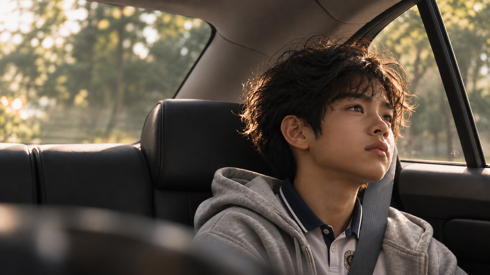
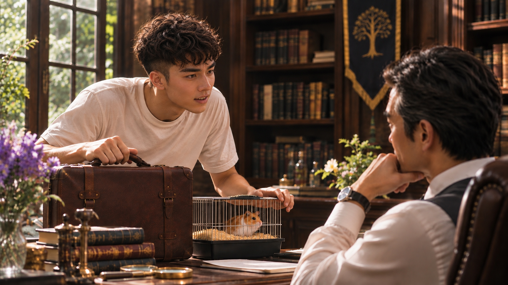
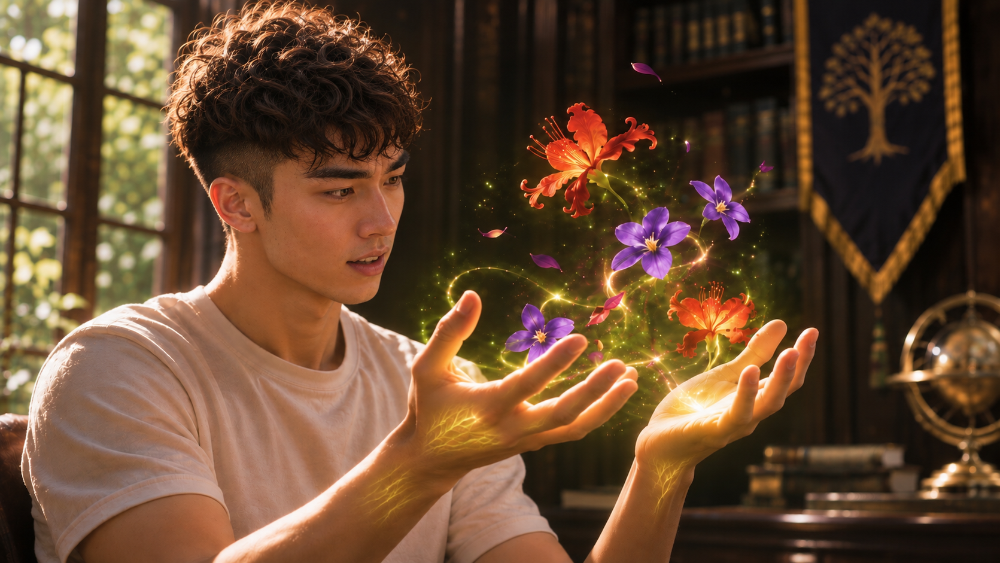
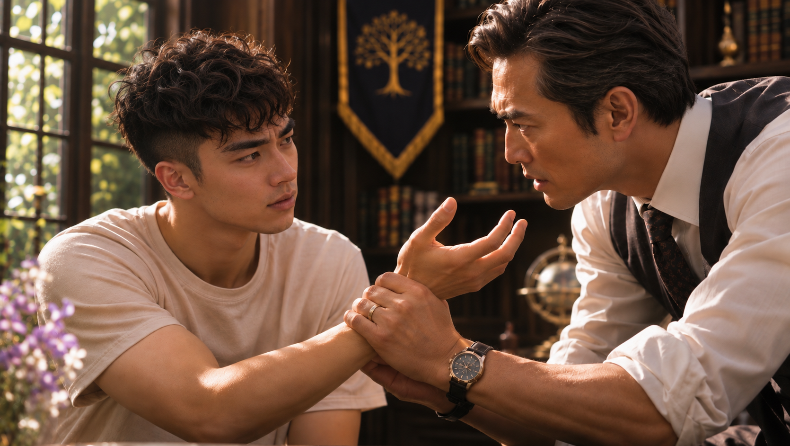
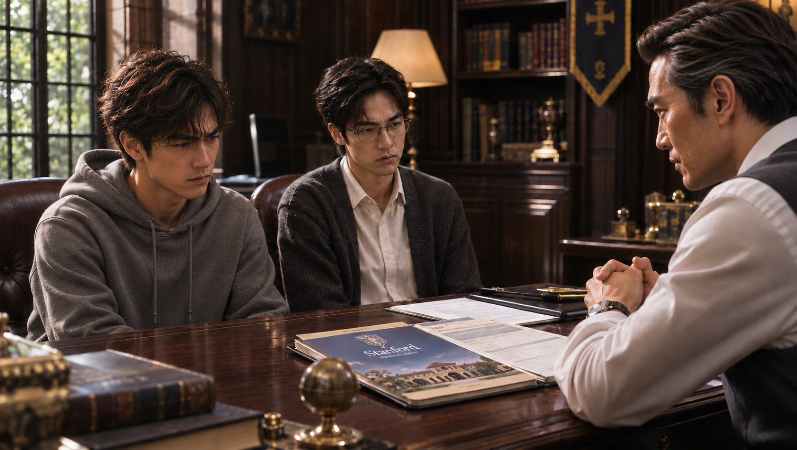

WHITE MAGIC ART STUDIO
第四章
難言之隱
「有沒有哪裡不舒服？頭還會痛嗎？」
景皓握著方向盤，透過後照鏡看向坐在後座的兒子。
「沒有啦！你剛才不是才幫我量過體溫嗎？」
昱鎧靠在椅背上，語氣帶著些許無奈。
「我真的沒事了。你不用特地跟碧雲阿姨借車送我上學，我照平常的方式去就好了。」
「誰說我是特地送你的？」景皓笑了笑，「我剛好有事要辦，離你學校很近，順路而已。」
他停了一下，又故意補上一句。
「怎麼？不想跟老爸一起出門啊？」
「哪有！你不要亂講啦！」
昱鎧立刻反駁，耳根卻有些泛紅。
景皓看著後照鏡裡的兒子，嘴角不自覺地揚起。
距離昨晚使用神癒花救回昱鎧，才過了不到一天。
雖然孩子的體溫已經恢復正常，精神也比先前好了許多，但景皓仍然不敢掉以輕心。
這場病來得太突然。
更讓他不安的是，即使憑藉自己多年研究植物精華的經驗，也始終無法查明病因。
直到最後，他不得不回到那個十年未曾踏足的地方。
梁家
想到這裡，景皓的笑意淡了幾分。
「爸爸。」
「嗯？」
「我可以問你一個問題嗎？」
「當然可以啊。」
昱鎧望著車窗外，猶豫了一會兒才開口。
「你覺得……媽媽為什麼不要我們？」
景皓握著方向盤的手微微一緊。
「怎麼突然問這個？」
「沒有啊，就是突然想到。」
昱鎧低下頭，手指無意識地撥弄著書包背帶。
「你以前說過，我是在美國出生的。後來媽媽不要我們，所以你才帶我回台灣。」
他停頓了一下。
「可是你一直沒告訴我原因。」
景皓沒有接話。
「我就在想……會不會是因為我？」
前方的號誌轉為紅燈。
景皓緩緩踩下煞車。
「昱鎧。」
「嗯？」
「不是你的問題。」
他的語氣比平常認真許多。
「這件事跟你一點關係都沒有。」
昱鎧抬起頭。
景皓望著前方，思索片刻，才繼續說道：
「那時候，你媽媽還有很多想做的事，也有她想追求的夢想。可是我們都還沒準備好，事情就發生了。」
「所以……她不想當媽媽？」
「應該說，她還沒準備好。」
景皓輕輕嘆了口氣。
「後來我們談過，決定由我來照顧你。這樣她可以繼續過自己想要的生活，而我也能陪著你長大。」
昱鎧安靜地聽著。
「不過，有件事爸爸得跟你道歉。」
「什麼事？」
「我以前說媽媽不要我們，那樣講不對。」
景皓從後照鏡看著他。
「不管大人之間發生了什麼，都不應該讓你覺得自己是不被需要的。對不起。」
昱鎧沒有立刻回答。
過了一會兒，他才小聲問：
「那……我以後有機會見到她嗎？」
「如果她願意，我會幫你安排。」
景皓沒有給出自己無法保證的承諾。
「但不管結果怎麼樣，你都可以問我。我不希望你一直把這些事情藏在心裡。」
「嗯。」

車內重新安靜下來。
直到號誌轉綠，景皓才再次開口。
「昱鎧。」
「幹嘛？」
「你會不會很介意……沒有媽媽陪在身邊？」
昱鎧想了一會兒，搖搖頭。
「還好啊。」
「真的？」
「真的啦！我有你、有碧雲阿姨，還有韓國的姑姑啊！」
他說著，忽然笑了起來。
「雖然我到現在都還沒見過她。」
景皓也笑了。
「你知道嗎？其實你的家人比你想像的還要多。」
「比如叔叔跟爺爺？」
昱鎧立刻接話。
「你以前說過，等我長大一點就帶我去見他們。」
景皓的笑容微微一僵。
「對啊。」
他看著前方的道路。
「等你再大一點。」
就在這時，放在車內置物架上的手機響了。
螢幕顯示著一個熟悉的名字。
梁景瑜
「欸！韓國姑姑打來了！」
景皓拿起手機，交給後座的昱鎧。
「來，你接。」
昱鎧立刻按下通話鍵。
「喂！姑姑！」
「哇！是小鎧嗎？」
電話那頭傳來女子驚喜的聲音。
「天啊，好久沒聽到你的聲音了！你現在是不是小學四年級了？」
「對啊！而且我還是班上最高的！」
「真的假的？那我之前寄給你的衣服，不就快穿不下了？」
「有幾件已經不能穿了。」
「那姑姑下次再買新的寄給你好不好？」
「好啊！謝謝姑姑！」
昱鎧開心地笑了起來。
「對了，姑姑，你到底什麼時候要回台灣？」
電話那頭安靜了片刻。
「這個嘛……還不確定耶。要等我這邊的工作告一段落。」
「你每次都這樣說。」
「唉唷，姑姑也很想見你啊！」
景瑜笑著安撫他。
「等有機會回去，我一定第一個去找你，好不好？」
「好吧。」
昱鎧雖然有些失望，仍然乖乖答應。
這時，景皓已經將車停在學校附近。
「親愛的韓國姑姑！」
他提高音量，朝手機喊道：
「你姪子的學校到了，準備下車囉！」
「好啦好啦！」
景瑜笑著回應。
「小鎧，今天上學要開心喔！」
「好！姑姑再見！」
昱鎧將手機還給父親，背起書包，準備下車。
「梁昱鎧。」
他才剛走出車門，景皓便叫住了他。
「幹嘛？」
「真的沒有哪裡不舒服？」
昱鎧無奈地看著父親。
「真的沒有啦！」
「好，轉過去一下。」
「又要幹嘛啦？」
嘴上雖然抱怨，昱鎧還是乖乖轉過身。
景皓望著兒子的背影。
他的瞳孔在瞬間浮現淡淡的綠色。
周圍的聲音彷彿變得遙遠。
在他的視野裡，昱鎧身上流動的生命氣息逐漸清晰，情緒也平穩得沒有異樣。
景皓仔細確認了一會兒，才讓眼睛恢復原狀。
「嗯，應該真的沒事了。」
「我就說吧！」
「如果有任何不舒服，記得馬上請老師打電話給我，知道嗎？」
「知道啦！」
「放學照平常一樣搭校車回去。」
「好！」
昱鎧揮了揮手，轉身跑向校門。
景皓一直目送兒子走進校園，直到那個小小的身影消失在人群裡，才重新拿起手機。
「喂。」
「你還沒告訴他，對吧？」
景瑜的聲音從電話那頭傳來。
景皓知道她在問什麼。
「告訴他什麼？我們家是某種魔法世家，消滅惡魔、保護人類是我們的天職？」
他苦笑。
「當然沒有。」
「大哥……」
「我只希望他能像普通孩子一樣長大。」
景皓發動車子。
「而且，我到現在都還不能確定，他到底有沒有繼承我們家的力量。」
「就算沒有，他也可能成為烙印者啊。」
景瑜提醒道。
「昱鎧很聰明。就算我們不告訴他，他遲早也可能察覺到這個世界不只有人類。」
「我知道。」
景皓看著前方。
「可是我們過的是什麼日子，你也很清楚。」
他停頓了一下。
「如果可以，我真的不希望他再走一遍。」
電話那頭沉默了幾秒。
「哥，我跟你一樣希望昱鎧幸福。」
景瑜輕聲說道。
「但有些事情，不是我們希望避開，就真的能避開的。」
景皓沒有反駁。
他知道妹妹說得沒錯。
「算了，先不談這個。」
他轉換話題。
「你今天特地打電話過來，應該不只是想找小鎧聊天吧？」
「嗯……」
景瑜遲疑了一下。
「爸昨天打電話給我了。」
景皓的表情瞬間沉了下來。
「是嗎？」
「他好像喝了不少酒。」
「……他說了什麼？」
「他說你昨天回家偷了神癒花，還用毒花對付二哥。」
景瑜頓了頓。
「哥，昱鎧是不是出事了？」
景皓沉默片刻，才將昨晚的經過簡單告訴妹妹。
「我之前跟你說過，昱鎧的出生方式比較特殊。」
「嗯，我記得。」
「前幾天他突然發高燒。我試過很多方法，連植物精華都沒有用。」
景皓的聲音低了下來。
「我真的找不到其他辦法。」
「所以你才回去拿神癒花？」
「對。」
「可是……你為什麼要用水芹花對付二哥？」
「因為他擋在我面前。」
景皓回答得很平靜。
「我知道那樣做不對。但當時我滿腦子只想著一件事。」
「什麼？」
「我不能失去昱鎧。」
電話那頭再度安靜下來。
過了好一會兒，景瑜才開口。
「我知道了。」
她輕輕嘆了口氣。
「可是哥，已經十年了。」
景皓沒有說話。
「你真的打算一輩子都不回家嗎？」
「景瑜……」
「爸跟二哥甚至不知道昱鎧的存在。」
她的語氣漸漸變得沉重。
「我們明明都是他的家人。」
景皓握緊方向盤。
「而且，自從媽走了以後，我就再也沒見過你。」
景瑜的聲音有些哽咽。
「你連她的葬禮都沒有回來。」
這句話讓景皓久久無法回答。
他想起母親。
想起那座玻璃花院。
還有很多年前，她曾經對自己說過的那些話。
「妹……」
他終於開口。
「對不起。」
「我不是要你道歉。」
「我知道。」
景皓低下聲音。
「可是這些年，我真的辜負你們太多了。」
「那你為什麼不回來？」
景皓張了張嘴，卻不知道該從哪裡說起。
「因為爸嗎？」
景瑜問。
「你還在氣他？」
景皓沉默了。
這一次，景瑜沒有催促。
「哥，我知道你心裡有很多事情放不下。」
她緩緩說道。
「可是我在韓國的任務總有一天會結束。到時候我一定會回家。」
「……」
「爸的木瞳術你也知道。只要他想知道，我跟你這幾年還有聯絡的事情，根本瞞不住。」
景皓閉了閉眼。
「我知道。」
「所以我我也沒辦法一直幫你隱瞞。」
景瑜停頓了一下。
「哥，我真的很希望……我們家還能像以前一樣。」
景皓望著前方的道路。
過了許久，他才輕聲回答：
「我也是。」
「……」
「如果可以，我也希望如此。」
他的聲音很輕。
「只是現在的我，還需要一點時間。」
景瑜沒有再說話。
「不過，妹。」
「嗯？」
「謝謝你。」
「謝什麼？」
「謝謝你一直支持我當昱鎧的爸爸，也願意當他的好姑姑。」
景皓勉強笑了笑。
「還有……讓我繼續當你的哥哥。」
電話那頭傳來一聲輕輕的吸氣。
「你本來就是我哥啊。」
景皓沒有回答。
因為他知道，妹妹說得越理所當然，自己就越無法坦然面對這個家。
十九年前｜梁家大宅
那一年，梁景皓十七歲。
他站在父親的辦公室門前，左手提著一只皮革手提箱，右手拿著小型寵物籠。
籠裡，一隻倉鼠正安靜地縮在木屑之間。
景皓看了看手中的東西，神情難掩興奮。
這半個月來，他一直在研究一項新發現。
而今天，他終於有了足夠的把握，想親自向父親展示成果。
辦公室的門忽然打開。
景毅從裡面走了出來。
「嘿，景毅。」
景皓笑著打招呼。
景毅看了他一眼，卻沒有回應。
他逕自走過哥哥身旁，往長廊另一端離去。
景皓愣了一下。
「……怎麼了？」
但景毅沒有停下腳步。
「龍兒？」
辦公室內傳來父親的聲音。
「你找我？」
景皓回過神。
「對！爸，我有東西想給你看！」

他走進辦公室，將手提箱與寵物籠放到桌上。
晉輝放下手邊的文件。
「這是什麼？」
「等一下，你看了就知道。」
景皓打開手提箱。
裡面整齊排列著數十個小格，每個格子都放著不同種類的花瓣，旁邊還貼有手寫標籤。
晉輝微微皺眉。
「花？」
「對，但不只是花。」
景皓小心地打開籠子，將裡面的倉鼠捧在手中。
「這是我朋友養的倉鼠。牠出生的時候，右後腳就有問題，平常走路都不太方便。」
晉輝看著倉鼠。
「所以？」
「你看。」
景皓從箱中取出兩片花瓣。
一片來自鳳凰木，另一片則是紫羅蘭。
他將花瓣放在掌心上方。
隨著聖術運轉，兩片花瓣逐漸散發出細微的光芒。
無數彩色光點從花瓣表面飄起，像是被某種無形的力量牽引，緩緩融入景皓的掌心。

晉輝的目光瞬間變了。
「龍兒……」
他站起身。
「你是元素使？」
「嗯。」
景皓興奮地點頭。
「我也是幾個禮拜前才發現的。」
「這是你的元素使天賦？」
「應該是。我發現自己可以吸收植物的精華，尤其是花朵。」
「你怎麼都沒說？」
「想說給你一個驚喜。」
景皓低頭看著掌心流動的光澤。
「不同植物的精華，會產生不同效果。」
晉輝目不轉睛地看著他。
「然後呢？」
「重點來了。」
景皓將倉鼠輕輕放在桌面的軟墊上。
他把雙手覆在倉鼠受影響的後腳附近。
掌心的彩色光澤逐漸匯聚，緩緩融入倉鼠的身體。
片刻後，景皓收回雙手。
倉鼠先是試探性地動了動腳，接著向前走了幾步。
原本不協調的步伐，竟然變得穩定許多。
牠沿著軟墊跑了一小段距離，甚至還停下來整理自己的毛髮。
晉輝愣住了。
「這……」
他走近桌邊，仔細觀察。
「牠的腳好了？」
「對！」
景皓難掩興奮。
「我試了很多種組合，最後發現鳳凰木和紫羅蘭的精華，可以強化骨骼與相關組織。」
他指向箱子裡的花瓣。
「我們木之聖術師本來就擅長促進細胞修復，但如果能把不同植物的精華融入聖術，也許就能做到更多事情。」
景皓越說越投入。
「像是治療先天性的缺陷，或是一般醫療很難處理的疾病。」
他抬起頭，眼神明亮。
「爸，你想想看，如果這些方法能夠繼續研究下去，說不定有一天，我們真的可以幫助很多人。」
晉輝看著兒子。
下一刻，他忽然伸手握住景皓的手腕。

「等等。」
景皓一愣。
「怎麼了？」
「你剛才說，你可以吸收不同植物的精華，讓它們產生不同效果？」
「對。」
「那你有沒有試過，把這些力量用在自己身上？」
景皓眨了眨眼。
「自己？」
「例如強化肌肉、骨骼，甚至提升身體的反應速度。」
「這個……我的確是有一些推測啦。」
晉輝的眼神逐漸亮了起來。
「龍兒，你知道這代表什麼嗎？」
景皓有些困惑。
「什麼？」
「你可能找到了一條全新的修煉方式。」
晉輝放開他的手腕，走到桌前。
「木之聖術的強項，從來不只是控制植物。生命本身，就是木的力量。」
他重新看向景皓。
「如果你能把植物的精華轉化為自己的能力，你就能突破過去的限制。」
「可是爸，我原本是想……」
「我知道你想研究醫療。」
晉輝打斷他。
「但你是『木翼』，你要先有足夠的力量，才能真正發揮這項天賦。」
景皓低頭看著自己的掌心。
他並不完全認同父親的想法。
然而，那句話也讓他開始思考，自己是否還沒有真正理解這份能力。
接下來的幾年，景皓幾乎將所有時間都投入植物精華的研究。
只不過，研究方向逐漸偏離了最初的醫療實驗。
在晉輝的安排下，他開始嘗試將不同植物的精華融入自身。
鳳凰木與紫羅蘭的組合，能在短時間內大幅提升他的力量。
水仙與紫羅蘭的精華，則能強化腿部的爆發力，使他擁有驚人的跳躍能力。
百合花的精華，可以產生使敵人陷入昏睡的效果。
而金絲桃的精華，經過特殊的聖術轉化後，甚至能凝聚成向外釋放的能量。
景皓逐漸掌握這些能力。
他的進步速度，遠遠超出晉輝原先的預期。
從最初只能勉強應付父親的攻勢，到後來能在訓練中與他抗衡，景皓只用了短短幾個月。
晉輝對這個兒子的期待，也因此越來越高。
他開始帶著景皓參與更多實戰任務。
驅魔、支援其他聖術師、處理各地出現的異常事件。
景皓原本不喜歡這些事情。
但他漸漸發現，自己學到的能力確實能夠在危急時刻保護他人。
這讓他願意繼續下去。
只是，他始終沒有忘記最初那隻倉鼠。
比起擊碎岩石，他更想知道，自己的能力究竟還能治好多少生命。
而在梁家大宅的另一端，景毅的生活也悄悄發生了變化。
過去，兄弟倆經常一起接受父親訓練。
如今，晉輝將大部分心力放在景皓身上。
景毅逐漸不再參與那些訓練與任務。
他開始把時間投入學業，尤其是醫學相關的知識。
他希望找到另一條路。
一條即使不依靠木翼，也能讓父親看見自己的路。
至於家中最小的妹妹景瑜，則在兩個哥哥各自忙碌的日子裡，逐漸展現出靈獸使的天賦。
三個孩子走上了不同的道路。
而晉輝並未察覺，自己對長子的期待，正悄悄改變整個家的關係。
六年後
晉輝再次召集兩個兒子來到辦公室。
景毅比景皓早到。
晉輝坐在沙發上，身旁放著一份文件。
景皓進門時，還特地看了他一眼。
「今天怎麼這麼正式？」
景毅沒有回答，只是將目光移向父親。
晉輝合上手中的資料。
「今天找你們來，有幾件事情要說。」
他先看向兩個兒子。
「第一件事，是關於景瑜。」
景皓立刻坐直身體。
「景瑜怎麼了？」
「她下週要去韓國。」
「韓國？」
「對。」
晉輝點頭。
「名義上是留學，實際上，她會協助韓國的聖術師聯盟，參與當地的醫療支援工作。」
景毅皺起眉。
「要去多久？」
「目前沒有確定的期限。那邊的木之聖術師人手不足，在新的支援人員到位以前，她可能都得留在那裡。」
「她自己知道嗎？」景皓問。
「這是她自己提出的。」
晉輝的語氣平穩。
「我沒有強迫她。」
景皓與景毅對望了一眼。
他們都知道，景瑜向來有自己的想法。
只是這個決定，仍然來得有些突然。
「她既然決定了，我們就支持她吧。」
晉輝說完，將另一份文件放到桌上。
「接下來，是你們兩個的事。」
他看向景毅。
「武兒，恭喜你。」
景毅微微抬頭。
「你的申請已經有結果了。」
晉輝將文件推向他。
「史丹佛大學那邊，已經正式錄取你了。」
景皓愣了一下，隨即露出驚喜的表情。
「真的假的？」
他轉頭看向弟弟。
「景毅，你考上史丹佛了？」
「嗯。」
景毅淡淡地回答。
「太厲害了吧！」
景皓忍不住笑了起來。
「你之前都沒跟我說！」
「還沒確定的事情，有什麼好說的。」
景毅雖然語氣平靜，嘴角卻隱約浮現一絲笑意。
晉輝看著次子。
「這幾年你在醫學方面的努力，我都有看見。」
景毅抬起頭。
那句話讓他有些意外。
「謝謝爸。」
然而，晉輝接下來的一句話，卻讓房間裡的氣氛發生了微妙的變化。
「另外，龍兒。」
景皓轉過頭。
「你也準備去美國吧。」
「……啊？」
景皓愣住。
「我？」
「對。」
「可是我又沒有申請學校。」
「入學的事情，我會請人協助你處理。」
景皓皺起眉。

「等一下，爸，你怎麼突然要我去美國？」
晉輝沒有立刻回答。
他從抽屜裡取出另一份資料。
那是一份關於半年前美國異常事件的情報摘要。
「你還記得半年前，美國發生的黑霧事件嗎？」
景皓的神情逐漸認真。
「記得。」
那起事件曾在各地聖術師之間引發不小的震動。
儘管相關情報受到嚴格管制，仍有部分消息流傳到台灣。
「據說跟魔神有關。」
景皓說。
「沒錯。」
晉輝將資料翻開。
「但更值得注意的，是事件中出現的另一個存在。」
景皓看向父親。
「雷翼？」
晉輝點頭。
「這麼多年來，六翼的情報始終零散。如今，美國卻傳出雷翼現身的消息。」
「消息確定嗎？」
「至少美國聖術會的反應，足以證明這件事不只是傳聞。」
晉輝靠向椅背。
「他們幾乎封鎖了所有相關資訊。雷翼的身分、下落，以及事件中的詳細經過，都沒有對外公開。」
「為什麼？」
景皓問。
「誰知道呢。」
晉輝輕輕搖頭。
「也許是為了保護他，也許是想把他當成某種秘密武器。」
景皓陷入沉思。
他很清楚「雷翼」代表什麼。
因為自己同樣背負著另一個名字。
木翼
那是從年少時便被父親反覆提起的使命。
即使這些年，他已經逐漸找到自己理想的步調，但這個身分仍然像一道無形的影子，始終跟隨著他。
「所以……」
景皓緩緩開口。
「你要我去美國找雷翼？」
「如果有機會，當然最好。」
晉輝回答。
「但那不是唯一的目的。」
他看向景皓。
「你這幾年一直在研究植物精華的醫療用途，不是嗎？」
景皓微微一怔。
「是啊。」
「既然如此，為什麼不去更大的地方看看？」
晉輝將資料放下。
「美國的醫學研究資源，比我們現在能接觸到的更完整。那邊也有不同的聖術師訓練體系。」
他停頓了一下。
「你可以學醫，也可以接觸更多聖術師。」
「……」
「如果雷翼真的在美國，你甚至可能有機會見到一個和你背負相似使命的人。」
景皓低頭看著桌上的資料。
這一次，他沒有立刻反駁。
晉輝繼續說道：
「龍兒，我知道你不喜歡我一直要求你變強。」
景皓抬起頭。
「但我也不是完全不明白，你想用自己的力量做什麼。」
晉輝的目光落在兒子身上。
「既然你想救人，就去學更多能救人的方法。」
這句話讓景皓沉默了。
他想起十七歲那年，自己第一次向父親展示植物精華的能力。
那時，他滿心期待的不是戰鬥，而是醫療。
如今，父親竟然主動提起了這件事。
「可是……」
景皓猶豫了一下。
「我真的能去嗎？我又沒有像景毅一樣，準備那麼久。」
「所以你要補上的東西還很多。」
晉輝回答得直接。
我可以替你爭取學習的機會，但能不能跟上，得靠你自己。」
景皓點了點頭。
他知道父親說得有道理。
只是，坐在一旁的景毅，始終沒有再開口。
景皓轉頭看向弟弟。
「景毅，你覺得呢？」
「我覺得？」
景毅抬起眼。
「你想去就去啊。」
他的語氣平靜得讓人聽不出情緒。
「反正爸都替你安排好了。」
景皓微微一愣。
晉輝卻沒有察覺其中的異樣。
「武兒，你先去美國熟悉環境，之後也能照應你哥。」
景毅看向父親。
片刻後，他才回答：
「知道了。」
他站起身。
「如果沒有其他事，我先回房了。」
「去吧。」
景毅拿起文件，轉身離開。
辦公室的門輕輕關上。
景皓望著那扇門，心裡忽然有些不是滋味。
他知道弟弟為了學業付出了多少努力。
而自己卻在毫無準備的情況下，得到父親替他安排的機會。
這件事對景毅而言，恐怕並不好受。
「龍兒。」
晉輝的聲音將他的思緒拉回來。
「你怎麼想？」
景皓看著父親。
又低頭看了看桌上那份關於黑霧事件的資料。
雷翼。
木翼。
這兩個名字，似乎代表著某種他始終無法迴避的命運。
但真正讓他猶豫的，並不只是這些。
他想起自己研究過的花朵。
想起那隻重新站起來的倉鼠。
還有那些過去在任務中，明明就在眼前，自己卻無能為力的生命。
如果真的能去美國……
或許，他能找到更多答案。
不只是關於木翼。
也是關於自己。
「爸。」
景皓終於開口。
「如果我去美國，我還是想繼續研究醫療。」
晉輝看著他。
「可以。」
「不只是為了變強。」
「我知道。」
景皓有些意外地看著父親。
晉輝卻只是將桌上的資料收好。
「不過，該接受的訓練，一樣不能少。」
景皓忍不住笑了。
「我就知道。」
晉輝也淡淡笑了笑。
「所以呢？」
景皓沉思片刻，終於點頭。
「好。」
「我去。」
那一年，梁景皓二十三歲。
他接受了父親的安排，準備前往美國。
他以為自己即將踏上的，是一條能讓他繼續追求理想、也能逐漸理解木翼使命的道路。
卻不知道，這趟旅程將在往後幾年裡，徹底改變他與梁家的關係。